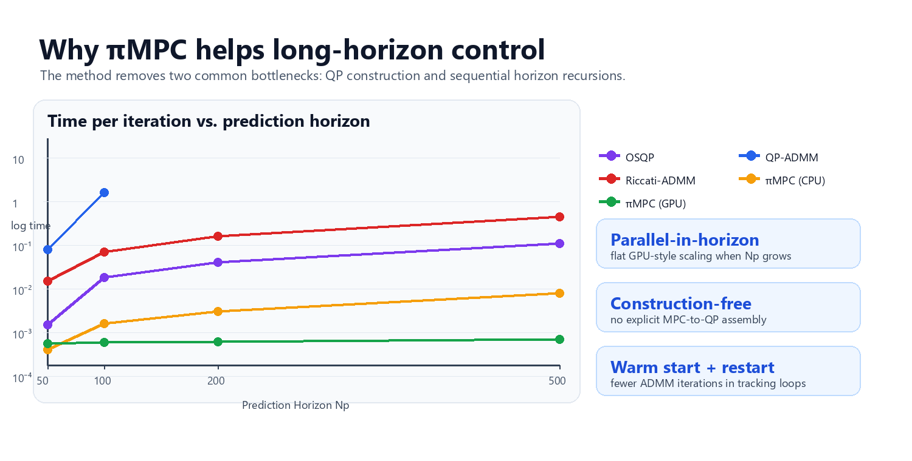
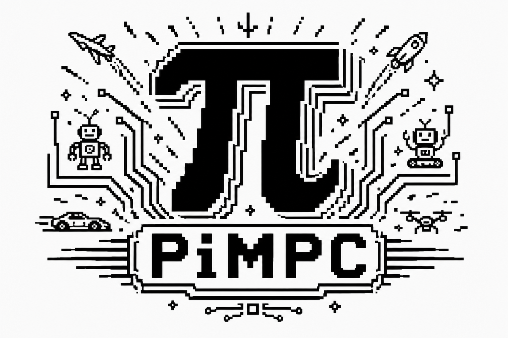
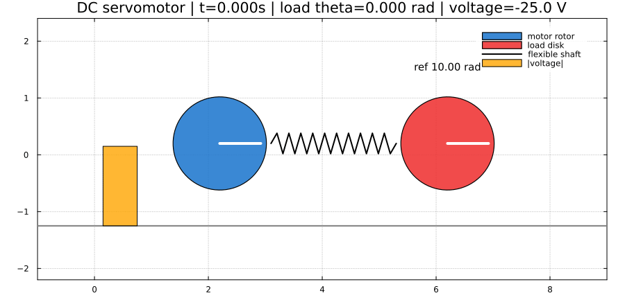

Notebook-rendered closed-loop GIFs: tractor-trailer moose test, planar quadrotor tracking, and cart-pole regulation.
Abstract
The alternating direction method of multipliers (ADMM) has gained increasing popularity in embedded model predictive control (MPC) due to its code simplicity and pain-free parameter selection. However, existing ADMM solvers either target general quadratic programming (QP) problems or exploit sparse MPC formulations via Riccati recursions, which are inherently sequential and therefore difficult to parallelize for long prediction horizons. This technical note proposes a novel parallel-in-horizon and construction-free nonlinear MPC algorithm, termed πMPC, which combines a new variable-splitting scheme with a velocity-based system representation in the ADMM framework, enabling horizon-wise parallel execution while operating directly on system matrices without explicit MPC-to-QP construction. Numerical experiments and accompanying code are provided to validate the effectiveness of the proposed method.
Problem
πMPC solves constrained finite-horizon MPC subproblems directly from the system matrices. In the Julia README interface, the common bound form is configured with xmin/xmax, umin/umax, and dumin/dumax; in the ADMM view these are projection updates over constrained sets X, U, and ΔU.
minimize over x,u
Σ_{k=0}^{N-1} (
||C x_k - r_y||²_{W_y}
+ ||u_k - r_u||²_{W_u}
+ ||Δu_k||²_{W_Δu}
) + ||C x_N - r_y||²_{W_f}
subject to
x_{k+1} = A x_k + B u_k + e, k = 0,...,N-1
x_min ≤ x_k ≤ x_max, k = 0,...,N
u_min ≤ u_k ≤ u_max, k = 0,...,N-1
Δu_min ≤ Δu_k ≤ Δu_max, k = 0,...,N-1
Here A, B, and e are the discrete-time state matrix, input matrix, and affine term. The matrices W_y, W_u, W_Δu, and W_f weight output tracking, input usage, input increments, and terminal tracking.
Why It Helps
πMPC is designed for the regime where prediction horizons are long, NMPC linearizations update online, and sequential Riccati-style passes become a bottleneck.

Method Highlights

Parallel-in-horizon
Each prediction-stage block can update independently, so long horizons map naturally to CPU batches or GPU kernels.
Construction-free
πMPC operates directly on A, B, C, affine terms, references, and constraints instead of rebuilding an explicit MPC-to-QP form.
Projection-based constraints
The ADMM split handles constrained sets through projection updates; the README API exposes state, input, and input-increment bounds.
GPU acceleration
The horizon-wise structure is suitable for batched execution, which is especially useful for long-horizon robotics and NMPC rollouts.
Nesterov acceleration
Adaptive restart improves practical convergence speed while avoiding unstable momentum when residuals stop improving.
Receding-horizon warm starts
Closed-loop solves reuse shifted ADMM variables from the previous step, reducing work during trajectory tracking.
Examples
Examples are taken from the tutorial notebook and emphasize the solver property each system makes visible.

AFTI-16 aircraft tracking
A constrained aircraft model follows a pitch-angle reference while respecting actuator and state bounds.
- shows warm-started closed-loop tracking
- uses output matrix C and affine-free system matrices
- highlights Nesterov-accelerated ADMM iterations

DC servomotor step tracking
A small embedded-style motor example tracks a load-angle command with voltage constraints.
- simple deployment example
- direct matrix setup without QP construction
- good first hardware-control analogue
Cart-pole regulation
The notebook cart-pole demo visualizes stabilization with input limits and repeated receding-horizon solves.
- shows constrained balancing
- warm starts every control step
- compact model useful for tutorials
Tractor-trailer moose test
An articulated vehicle tracks a lane-change path while obeying steering and steering-rate limits.
- long prediction horizon
- rate-constrained inputs
- parallel horizon updates become valuable as preview grows
Planar quadrotor lemniscate
A top-down quadrotor tracks a moving figure-eight reference with predicted path overlays.
- per-stage references
- GPU-friendly horizon parallelism
- warm-started moving-target tracking

Multi-robot warehouse batch control
Multiple robots are stacked into a batched MPC problem and routed through warehouse-style stations.
- batched system matrices
- parallel solves across agents
- demonstrates scalable deployment patterns

Nonlinear process-control example
The ventilation/CSTR-style notebook example shows how πMPC can track process outputs under actuator and state limits.
- constrained process variables
- disturbance-style tracking
- useful outside robot motion examples
How πMPC Updates the Horizon
BibTeX
@article{wu2026pimpc,
title={πMPC: A Parallel-in-horizon and Construction-free NMPC Solver},
author={Wu, Liang and Yang, Bo and Li, Junheng and Yang, Xu and Mo, Yilin and Shi, Yang and Ames, Aaron D. and Drgoňa, Ján},
journal={arXiv preprint arXiv:2601.14414},
year={2026},
url={https://arxiv.org/abs/2601.14414}
}